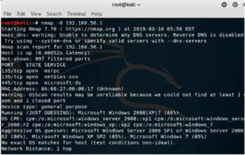
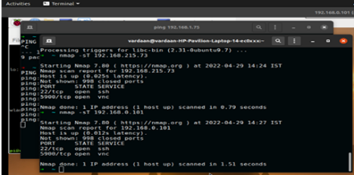

Port Scanning using Nmap
Nmap was used to discover open ports and services on IoT endpoints to identify accessible attack surface.


A hands-on project that exposes common IoT vulnerabilities by simulating attacks in a controlled environment and evaluating practical defenses across device, network, and cloud layers.
IoT devices are proliferating quickly while many ship with weak default settings. This work demonstrates how attackers exploit defaults and misconfigurations (port scanning, brute-force, MITM, phishing), and evaluates mitigations such as secure defaults, segmentation, and patching practices.
The testbed used Raspberry Pi and ESP8266 microcontrollers connected to sensors and emulated services on ThingSpeak. Security testing used Nmap for discovery and Metasploit for certain exploit / credential testing; network flows were observed via packet captures.
Nmap was used to discover open ports and services on IoT endpoints to identify accessible attack surface.
Metasploit auxiliary modules were used to check for weak/default credentials on IoT devices.
A controlled MITM scenario intercepted device-cloud communication to demonstrate data manipulation and exfiltration risks.
A demonstration phishing page illustrated how users may be socially engineered into disclosing credentials which can then be used against IoT management panels.
The experiments confirmed how quickly weak defaults and exposed services can be exploited. Demonstrated impacts included service disruption, credential compromise, and data interception. Proper mitigations significantly reduced observed risk in the testbed.
Raspberry Pi, ESP8266, Arduino emulator, ThingSpeak (emulation), Nmap, Metasploit, Wireshark / packet captures